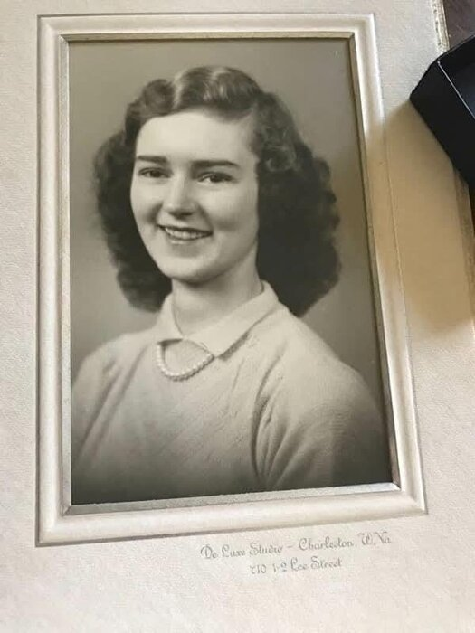
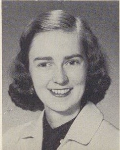
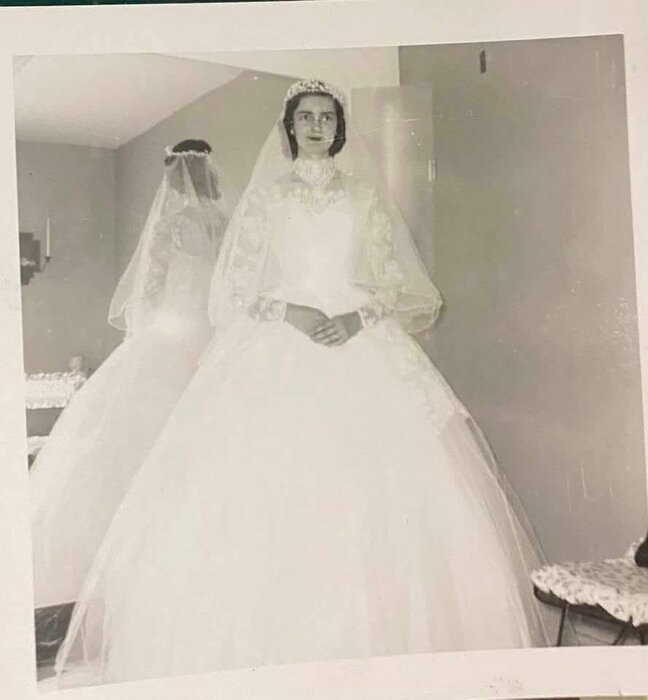
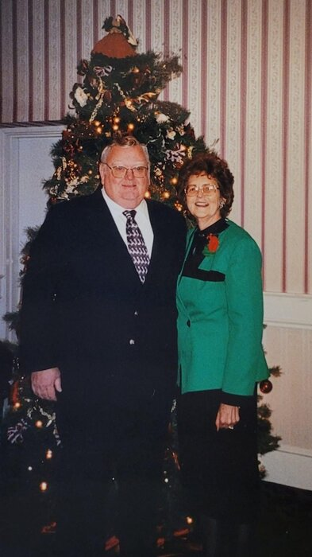
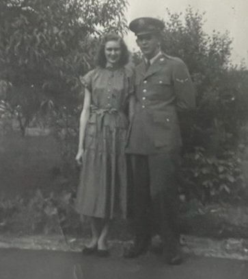
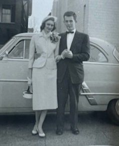
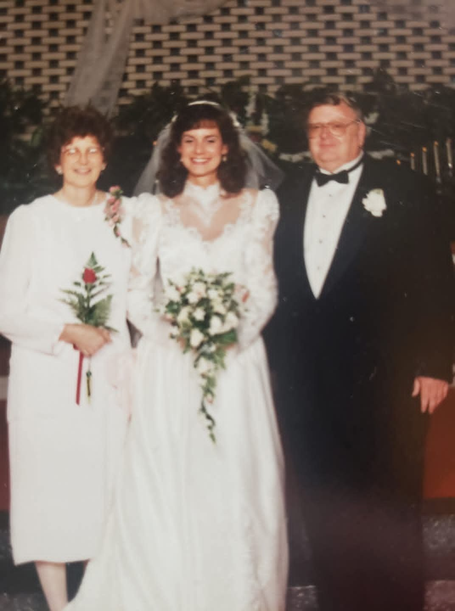
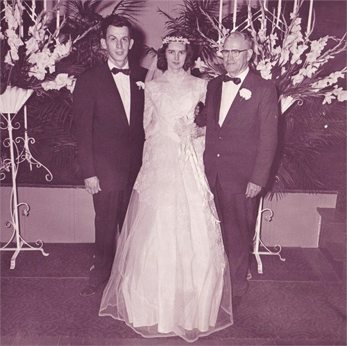
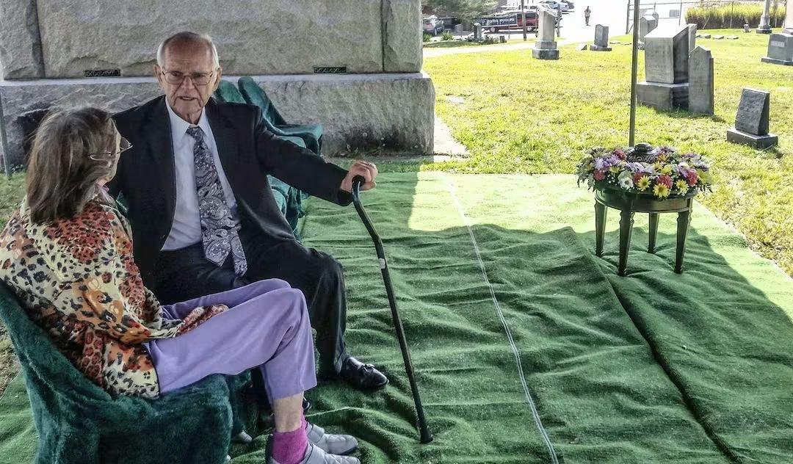
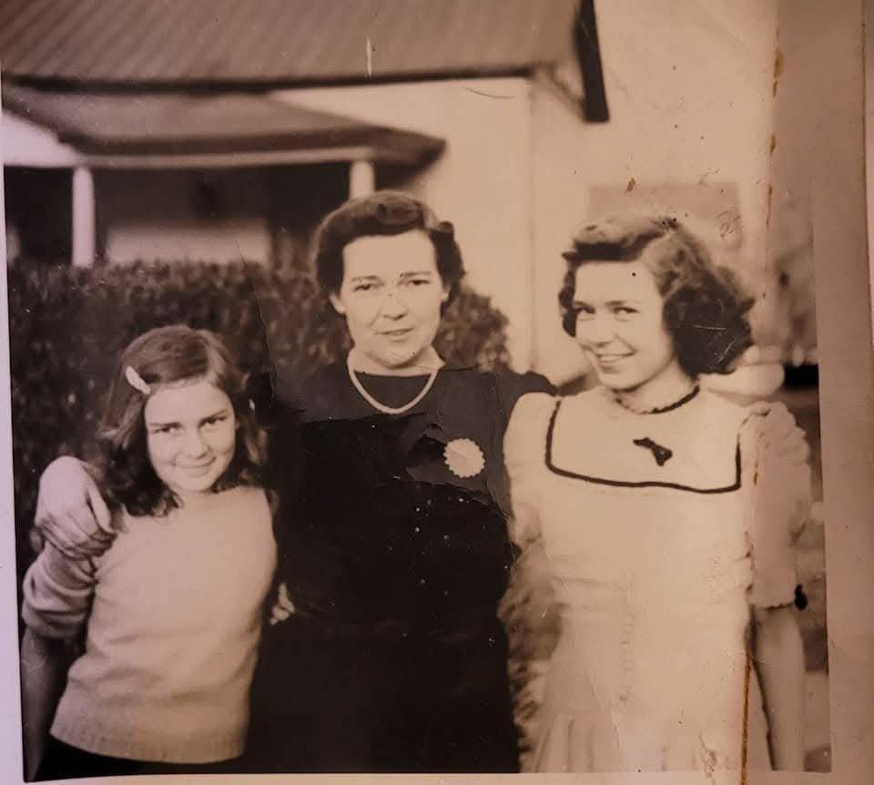

Ruth Laverne McKinney
10 July 1932 – 7 July 2018
Quick Facts
Immediate Family
Children
With Richard: Susan Ruth Shamblen (b. 25 November 1960, Cincinnati) FAMILY ACCOUNTTricia Marie Shamblen (b. 22 April 1965, Cincinnati; deceased 2016) FAMILY ACCOUNT
Stepfather: from 1976 both girls were raised by James Thomas "Tom" McGregor, who stepped up to become a father to them and chose to love and protect them as if they were his very own blood FAMILY ACCOUNT
Siblings
- Jackson Ahmeek McKinney (b. 21 January 1924, Beckley; d. 2014)
- Edgar A. McKinney (b. 6 October 1928, Beckley; d. 2018)
- Edna McKinney (b. 12 January 1931, East Bank, Kanawha County, West Virginia; d. 2002)
All by shared parents Dallas Cecil McKinney × Laverne Hurt. Ruth was the youngest of the four DOCUMENTED.
On Family Tree Sites
Couple Folder
Life Timeline
1932 · age 0
Born 10 July 1932, Raleigh County, West Virginia (family account: Beckley) SUPPORTED
1935–1940 · age 2–7
Lived in Town district, Raleigh Co., WV, with parents Dallas and Laverne and siblings Jack, Edgar and Edna; Ruth the youngest DOCUMENTED
c. 1948–1949 · age 16–17
Met Lawrence Richard Shamblen at the Baptist youth camp on Tyler Mountain, West Virginia, where her mother was a cook FAMILY ACCOUNT
Early 1950s · age
Attended West Virginia Institute of Technology, Montgomery, WV DOCUMENTED
1955 · age 22
B.S. in Home Economics, University of Cincinnati DOCUMENTED
1955 · age 22
Married Lawrence Richard Shamblen, 2 July 1955, East Bank, Kanawha Co., WV, by Rev. W. M. McKinney DOCUMENTED
1956–1960 · age 24–28
Home economics teacher, Sycamore High School, Blue Ash (Cincinnati), Ohio DOCUMENTED
1960 · age 28
Daughter Susan born, Cincinnati FAMILY ACCOUNT
1960s · age 28–36
Owned an apartment building in Bond Hill, Cincinnati, with Richard; a couple of years later bought a house in Roselawn, where the girls grew up FAMILY ACCOUNT
1965 · age 32
Daughter Tricia born, 22 April 1965, Cincinnati FAMILY ACCOUNT
1968 · age 36
Widowed, October 1968; Richard was killed in a traffic accident DOCUMENTED
1976 · age 44
Married Tom McGregor, 10 Jul 1976, in the garden at Kenwood Baptist Church, Cincinnati; that same month moved to Madeira, in the Indian Hill school district; Tom raised her daughters as his own FAMILY ACCOUNT
2016 · age 83–84
Daughter Tricia died SUPPORTED
2018 · age 85
Died, 7 Jul 2018, Madeira, Ohio FAMILY ACCOUNT
Life Story
Ruth Laverne McKinney was born July 10, 1932, in Beckley, Raleigh County, West Virginia, the youngest of the four children of Dallas Cecil McKinney and Laverne Hurt, "Nana" to the family. Like many coal-country families, they moved north for steady work, first to the Charleston area and later to Cincinnati.
Her mother cooked for the Baptist youth camp on Tyler Mountain, and there Ruth met Lawrence Richard Shamblen.
Ruth went to college at West Virginia Institute of Technology and then transferred to the University of Cincinnati, where she was in the Home Economics Club and the Y.W.C.A. and graduated in 1955 with a B.S. in Home Economics.
When Richard and Ruth first planned to marry, Richard backed out, afraid of taking on the responsibility of being married. Ruth's parents said they never wanted to see him again. About a year later Betty got Ruth and Richard back together again through a meeting in Charleston, and they eventually married and moved to Cincinnati.
They were married on July 2, 1955, at East Bank, Kanawha County, West Virginia, by the Rev. W. M. McKinney, and made their home in Cincinnati, first in Bond Hill and then in Roselawn. From 1956 to 1960 Ruth taught home economics at Sycamore High School in Blue Ash, where she also advised the Y-Teens and, in 1960, the Health Careers club.
Ruth and Richard also sold Bestline cleaning products from home; dozens of boxes filled the storage room in the Roselawn basement, and the girls and their friends climbed all over them FAMILY ACCOUNT. Several times a year Ruth took the girls to Beckley, to the family homestead that Daddy Hurt had built beside the railroad tracks, where Nana's brother and sister still lived. The girls played for hours under the railroad bridge, and Aunt Mel, Nana's sister, swept and hosed them off before they were allowed back in the house. Ruth and Aunt Mel took them on day trips from there, touring a coal mine and the White Sulphur Springs hotel FAMILY ACCOUNT.
In October 1968 Richard was killed in a truck crash, and Ruth was left a widow at thirty-six with two small daughters and a mountain of sudden grief. Richard was buried at Spring Grove, the same cemetery as her father. She refused to let the tragedy break her household. The family remembers her as an anchor; the word comes up again and again in their telling. She taught school, raised her girls, and held the line.
On July 10, 1976, she married James Thomas "Tom" McGregor in the garden at Kenwood Baptist Church. When Tom married Ruth, he did not just take a wife: he stepped up to become a father to Susan and Tricia. He loved Ruth completely, and he chose to love and protect her daughters as if they were his very own blood. That same month the family moved to a house in Madeira, in the Indian Hill school district. Their home became the center of the family: Christmas ham soufflé and sticky rolls, strawberry picking, and Sundays at Kenwood Baptist.
Ruth and Tom were at Kenwood Baptist every Sunday. Ruth was close friends with Edith Lindner, whom she loved like a sister, and Ruth and Tom were often guests at the Lindners' parties. When grandchildren came, the grandkids grew up around Ruth and Tom.
Ruth lived to see it all: her daughters raised and her grandchildren grown. She did what she set out to do in October 1968; she did not let the tragedy break her household. The anchor held.
Ruth died at home in Madeira on July 7, 2018, three days before her eighty-sixth birthday.
In high school, girls were not allowed to play full-court basketball, but Ruth's coach would sneak and let them — Dawn remembers what a big deal that was for her.
In her later years Ruth's health gave way. On a family trip to West Virginia for Aunt Sonia's funeral she fell at a rest stop; back in Cincinnati the hospital found a broken hip and a broken pelvis. She went through hospital, then a nursing home, then home, with a hospital bed set up in the living room. As dementia took hold she believed she was still in the nursing home and made escape plans with Dawn. On her last day Dawn came with Tori and Melissa, thanked her alone, and told her it was all right to go, to go be with Aunt Tricia and Nana. That night, with Tom and a hospice nurse beside her, Ruth died at home in Madeira. Both Ruth and Tom were cremated, and the ashes are with the family, along with what is left of Tricia's ashes, for the planned shared burial and garden dedicated to Ruth.
Photo Gallery













Sources and Evidence
- Couple profile, Lawrence Richard Shamblen × Ruth Laverne McKinney (family accounts) FAMILY ACCOUNT
- Spring Grove Cemetery burial card for Richard names Ruth Shamblen as lot owner (1968) DOCUMENTED
- Kanawha County marriage register, pp. 306–307, entry 973, Lawrence Shamblen × Ruth Laverne McKinney: license 11 June 1955; married 2 July 1955 at East Bank, W. Va., by Rev. W. M. McKinney; bride age 22, born Raleigh County (public Geni document 6000000228455070134) DOCUMENTED
- 1940 United States Federal Census, Town, Raleigh, WV — Ruth, age 7, daughter of Dallas and Laverne; siblings Jack 16, Edgar 11, Edna 9 DOCUMENTED
- The Cincinnatian 1955 (University of Cincinnati yearbook): "McKinney, Ruth Laverne — B.S. in Home Ec … Transfer from West Virginia Institute of Technology, Home Ec. Club, Y.W.C.A." Public Library of Cincinnati and Hamilton County, digital collection DOCUMENTED
- Sycamore Log 1956–1960 (Sycamore High School yearbooks), faculty entries for Ruth L. Shamblen, Home Economics: 1956, 1957, 1958, 1959, 1960; Public Library of Cincinnati and Hamilton County DOCUMENTED
- Ohio voter registration: Ruth L. McGregor, born 10 July 1932, Madeira, Hamilton County SUPPORTED
Grades: DOCUMENTED an original record says it · SUPPORTED several records point to it · FAMILY ACCOUNT the family's own telling · UNPROVED a lead, not proved.
Research Notes and Open Questions
- Find her 1932 West Virginia birth record image. The West Virginia Births Index entry is known, but the image has not been seen.
- Find her 2018 Ohio death record or obituary. No free index covers 2018, and no obituary has been found.
- Find a record of the 1976 marriage to Tom McGregor (for example, the Hamilton County Probate Court marriage index). Kenwood Baptist Church, Cincinnati, is the family-account place.
- Her teaching career after 1968 is known only from the family; the Sycamore yearbooks list her through 1960.
DNA
No DNA matches linked yet.
Family Notes
Have a story, photo, correction or record? Leave a note in Ruth's Family Notes doc. We check each note and update this profile.
Profile history: Created 2 November 2026 from the family couple profile and research notes. Updated 7 November 2026 with records and an expanded Life Story and timeline from family accounts.